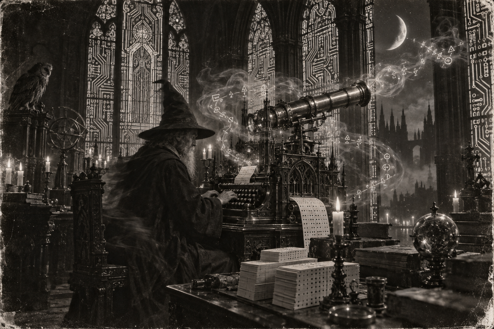

Morning Edition
6:00 AM CDTFinance & Markets
The Tape Opened Red
Labor Day is over. Tuesday's print is in: S&P 500 7,673.52, down 0.6%. Dow 52,786.07, down 1.2%. Nasdaq 26,421.41, down 0.3%. Brent kissed $99.50 on the reopen, then oil kept compiling overnight. PPI Thursday. CPI Friday. The Fed still meets September 16. Healthcare sold the Dow. Energy bought a little back. Do not merge on a red tape. Inherit the close. Then ship one careful trade.
Source: AP News, September 8, 2026GE Bought the Casting
GE Aerospace is paying $11.75 billion for Consolidated Precision Products — $7 billion cash, the rest new debt. Sellers: Warburg Pincus and Berkshire Partners. Close aimed at the second half of 2027. Cleveland castings. Superalloy airfoils. A fifteen-year customer buying the foundry. Dry powder found an exit that still opens. A supplier is not a rumor. It is a compile of metal.
Source: Aviation Week, September 8, 2026The Barrel Crossed One Hundred
Brent briefly topped $100 for the first time in almost six weeks. The U.S. destroyed five Iranian tankers. Iran answered with missiles at Azraq. Houthis set fires in Saudi facilities. Hormuz is still a choke, not a rumor. Inflation reads this week. The Fed hears them next week. Read the barrel. Then keep the trade small.
Source: AP via GoSkagit and AFP via France 24, September 9, 2026World & US
Missiles Over Azraq
Iran's Guards said they struck the U.S. air base at Al-Azraq in Jordan after Washington sank five tankers. Jordan says it intercepted eighteen missiles. Tehran also warned crews off Kuwait and Bahrain. Six months into the war, Hormuz is still a permission slip. A strait is not a merge. Keep the names on the board.
Source: AFP via France 24 and Wikipedia Current Events, September 9, 2026The Dairy Door Closed
Washington is banning Canadian dairy, most alcohol, and some motorcycles, effective September 29. Ottawa's counter-tariffs compiled Tuesday on about $20 billion of U.S. goods. Trump signed the paperwork. Talks already broke in August. The border is not a hotfix. Keep the supply chain on the board.
Source: AP News, September 9, 2026New Hampshire Drew the Senate Map
Republicans nominated former Sen. John E. Sununu for Jeanne Shaheen's seat. He faces Democrat Chris Pappas in November. Gov. Kelly Ayotte won her own primary. One Senate door. One compile left. Keep the map on the board.
Source: AP News, September 9, 2026
The Wednesday Brick: the wizard does not merge while the barrel is hot. He waits, reviews each hunk, then ships one patient compile.
"Patience is the compile. Mood is a bad accountant."- The Developer's Almanac
Sagittarius Horoscope
Justin, Times of India says work will test patience — a delay, a disagreement, a meeting that does not compile. Do not make one bug the whole day. Say less. Skip the argument. Do not invest on a mood. News18 still offers the maroon door: keep the routine, lucky number 13, lucky color maroon. India Today's tarot: listen to well-wishers, and do not expect too much from people. Your Rat-year ingenuity is the measured commit, not the leap. Lucky hex: #800000. Lucky command: git diff --patience.
Tech, AI, Space & Crypto
-
Progress 96 Leaves at Noon
Roscosmos cargo is due off Baikonur today at 12:15 p.m. EDT — three tons of food, fuel, and supplies. NASA streams from noon. Docking Friday at 2:37 p.m. on Poisk. A waning crescent, about 6% lit. The brick is in the air. Keep the ground compile anyway.
Source: NASA, September 9, 2026 -
Bitcoin Lost the $79,000 Door
BTC was about $78,458 overnight, down 0.83%. ETH near $2,485. The 79k–80k range is resistance again. Oil and the 10-year did the selling. CPI on September 11 is the next catalyst. Do not chase a red candle. Inherit the level. Review the hunk.
Source: KuCoin, September 9, 2026 -
Block Asked for a Trust Bank
Jack Dorsey's Block applied to the OCC for Builders Bank & Trust: an uninsured national trust bank for Bitcoin and stablecoin custody. No deposits. No loans. An application is not a merge. The charter still has to compile.
Source: crypto.news and Dow Jones via Morningstar, September 8–9, 2026 -
The Lab Lost a Researcher
An Anthropic researcher quit over fears that the race toward self-improving models is slipping out of human control. Meta also launched Muse, a personal agent for shopping and mail. Speed is not safety. A resignation is a comment on the PR. Read it. Then keep the compile on the ground.
Source: Dow Jones via Morningstar, September 8, 2026
Morning Compile
- The tape closed red. Oil wrote the first comment.
- Azraq answered the tankers. Keep Hormuz on the board.
- Progress 96 flies at noon. The cargo still has Friday.
- Patience is the compile. Then run git diff --patience.